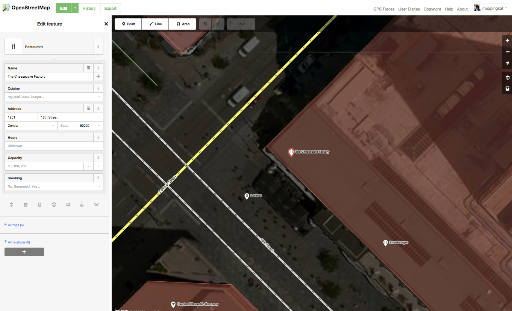
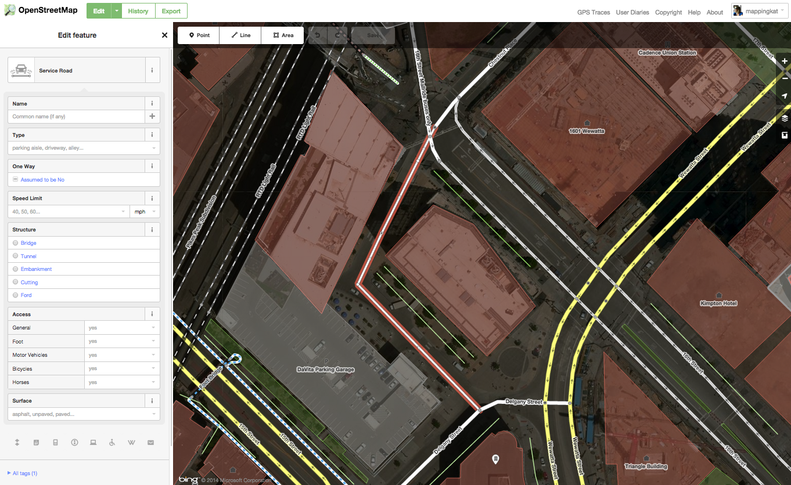

Mappy Hour: Exploring Open Source Mapping Tools
Denver Startup Week 2015
[image of startups]Today's Agenda:
- Introductions
- Overview of Web Maps
- Open Source Tools
- Creating a map
- Questions?
Why Maps?
We help you design custom forms and data collection apps
Examples
We also build and maintain tools that make it easier for others to make web maps
Tools
What are web maps?
Web Maps
Maps that are built for use on the web using tools that support web technology
Web maps are fast, flexible and dynamic
Web maps are connected to the information represented on the map
We know web maps are different than print maps
Web maps are still maps so the overarching requirement is that they are created with the purpose and user in mind
We still ask some of the same questions:
- What size will the map be?
- What geographic extent will the map be?
- What will the map scale be?
- What will the map projection be?
And some additional ones:
- Will other information be placed on top of the map?
- Will the map be viewed on multiple devices?
- Will the map be queried for additional information?
Some familiar examples...
MapQuest
Google Maps
Bing Maps
All these maps have common elements:
- A map
- A user interface
- Functionality to interact with the map

Let's travel back in time...
In 1996, MapQuest introduced the first popular web map
It was like a road map and yellow pages combined. Its primary purpose was to find places and get directions.
In 2005, Google released their version of the web map
Google Maps became more popular than MapQuest because the maps were faster
The maps were faster because of Google's use of map tiles
And Google also made its technologies available to developers through an API
Map Tiles
Pre-rendered images (tiles) that fit seamlessly together in geographic space in order to make maps load quickly.
Map tiles are 256x256 pixels and organized based on coordinates (x,y) and zoom levels (z).
Web Mercator
The tiling scheme used by most web maps.

Zoom Level
Defines the scale of the current map view. Ranges from 0 (entire world) to 21 (individual building level).


Map tiles and Web Mercator are still the de facto web mapping standard

That covers the "Map" portion of our web map, right?
Not yet.
Basemap vs. Overlay
Basemap
A map that provides geographic context to help support a wide variety of overlays - typically raster tiles.
Overlays
Themes of information overlaid on a basemap that help tell a story - typically vector.
More about the "Map"... we now have vector tiles
Vector Tiles
Similar to image tiles in terms of z/x/y but instead of images being served in each tile, data are.


User Interface
The "container" surrounding the map - built using HTML.
Map Functionality
Tools used to interact with the map and the overlaid content - added using JavaScript.
Open Source Tools
What is open source?
"Open source... promotes... universal access via a free license to a product's design or blueprint, and universal redistribution of that design or blueprint, including subsequent improvements to it by anyone." - Wikipedia
Why open source?
- Build on the work of others
- Contribute back to the community
- Increase collaboration with your constituency
- Increase transparency
- Build better products (more eyes on your code)
- President Obama's Open Data Policy
Why not?
@fulcrumapp
https//fulcrumapp.com
OpenStreetMap
An openly licensed map of the world being created by volunteers using local knowledge, GPS tracks and donated sources.
© OpenStreetMap
Why choose OpenStreetMap?
Source:http://openstreetmap.us/2013/04/openstreetmap-in-government
Why we choose OpenStreetMap?
- A free worldwide dataset
- Updated frequently
- Takes advantage of local knowledge
- No technical or legal restrictions
- Easy to use
Editing Interface

OpenStreetMap Basic Elements
- Nodes (points)
- Ways (lines, polygons)
- Relations (two or more elements)
- Tags (keys and values)
Nodes
Ways
- Open Ways (i.e. Roads, Streams, Railway Lines)
- Closed Ways (i.e. Roundabouts, Circular Walkways)
- Areas (i.e. Landuse, Buildings, Parks)
Open Ways
Closed Ways

Areas
Relations
Tags
Use tags as key = value to define map features
OpenStreetMap Demo
Quantum GIS (QGIS)
A free and open source desktop geographic information system (GIS) that provides data viewing, editing, and analysis capabilities.
Top Plugins
| OpenLayers Plugin | Uses Google, Bing, Yahoo or OpenStreetMap as a background |
| Table Manager | Manages the attribute table structure |
| MMQGIS | Additional tools, like geocoding, geometry conversion, buffering, hub analysis, color ramps, simple automation, etc. |
| Profile Tool | Plots terrain profiles |
| CADTools | Tools to perform CAD-like functions in QGIS |
QGIS Demo
CartoDB
Provider of a set of GIS and web mapping tools available in a cloud based platform.
Database in the Cloud
- Based on PostgreSQL with a geospatial extension called PostGIS
- Secure access
CartoDB Online Editor
- An online interface used to add/modify data, and create custom maps and visualizations
- Advanced option to manipulate data using SQL
- Advanced option to apply map styles using CartoCSS
Maps API
- A dynamic tile service that creates new tiles based on client-side requests
SQL API
- SQL statements can be used to retrieve data from the database
- Data are returned in multiple formats including JSON, GeoJSON, and CSV
CartoDB.js
- A JavaScript library built on top of Leaflet
- Wraps the Map and SQL APIs into visualizations or to integrate data into other web appications
CartoDB Demo
Mapbox
A provider of online maps and contributor to many popular online mapping libraries and applications.
Tools for custom map design
Mapbox Editor
Mapbox Editor
- An online mapping interface for basic map customization and data creation
TileMill
TileMill
- An open source tool used to design maps for the web
- Uses Mapnik for rendering and CartoCSS for styling
Mapbox Studio
Mapbox Studio
- An open source tool used to design maps for the web using vector tiles
- Uses Mapnik for rendering and CartoCSS for styling
Other tools
Mapbox.js
- A JavaScript library built on top of Leaflet
- Used to wrap Mapbox based maps and other functionality into web applications
iOS and Android SDK
- Tools used to build native mobile applications for iOS or Android
Mapbox API
- Used to power functions in maps like geocoding, routing, and offline caching
Mapbox Demo
Tool Review
Leaflet
A modern open-source JavaScript library for mobile-friendly interactive maps.
Overview
- Has all of the features that most developers need to create web maps
- Works seamlessly across all major desktop and mobile platforms
- Designed with performance and usability in mind
History
- Created as an alternative to larger mapping libraries like Goggle Maps and OpenLayers
- Originally funded as a tool to be used with OpenStreetMap
- Mapbox is currently funding the majority of development, and has hired its creator
Users
- NPMap.js
- Data.gov
- OpenStreetMap
- Many online map tools…
Leaflet Demo
Create a basic Leaflet map
Create a basic HTML Container
<!DOCTYPE html> <html> <head> <title> Leaflet Demo </title> </head> <body> </body> </html>
Create a basic Leaflet map
Include the Leaflet library CSS
<head> <title> Leaflet Demo </title> <link rel="stylesheet" href="//cdn.leafletjs.com/leaflet-0.7.3/leaflet.css" /> </head>
Create a basic Leaflet map
Include the Leaflet library JavaScript
<body> <script src="//cdn.leafletjs.com/leaflet-0.7.3/leaflet.js"></script> </body>
Create a basic Leaflet map
Create a "div" for the map
<body> <div id="map"></div> <script src="//cdn.leafletjs.com/leaflet-0.7.3/leaflet.js"></script> </body>
Create a basic Leaflet map
Style the "div"
<head> <title> Leaflet Demo </title> <style> body, html { height: 100%; } #map { width: 100%; height: 100%; } </style> </head>
Create a basic Leaflet map
Create a script tag
<body> <div id="map"></div> <script src="//cdn.leafletjs.com/leaflet-0.7.3/leaflet.js"></script> <script> </script> </body>
Create a basic Leaflet map
Create a map and assign it to the "div" element
var map = L.map('map').setView([39.75, -105], 15);
Create a basic Leaflet map
Create a tileLayer and assign it to the map
L.tileLayer('https://{s}.tiles.mapbox.com/v3/{id}/{z}/{x}/{y}.png', { maxZoom: 18, attribution: "OpenStreetMap, Mapbox, and NPS", id: 'nps.k7chg4fe' }).addTo(map);
Create a basic Leaflet map
Add a marker to the map
var marker = L.marker([39.75, -105]).addTo(map);
Modify the simple map to use GeoJSON
Add the "reqwest" library
<body> <div id="map"></div> <style src="//cdn.leafletjs.com/leaflet-0.7.3/leaflet.js"></script> <style src="//cdnjs.cloudflare.com/ajax/libs/reqwest/1.1.5/reqwest.min.js"></script> <script> ... </script> </body>
Modify the simple map to use GeoJSON
Load the GeoJSON from CartoDB
var geojsonLink = 'https://npmap-demo-account.cartodb.com/api/v1/sql?q=select+*+from+restaurants_modified&format=geojson';
Modify the simple map to use GeoJSON
Add the GeoJSON to the map
reqwest(geojsonLink, function(result) { L.geoJson(result).addTo(map); });
Style the data
Add a custom marker
reqwest(geojsonLink, function(result) { L.geoJson(result, { pointToLayer: function(feature, latlng) { return L.circleMarker(latlng); } }).addTo(map); });
Style the data
Style the marker
reqwest(geojsonLink, function(result) { L.geoJson(result, { pointToLayer: function(feature, latlng) { return L.circleMarker(latlng, { color: 'white', fillOpacity: 1, radius: 6 }); } }).addTo(map); });
Style the data
Define the colors
var colors = { 'Bar': '#8e44ad', 'Cafe': '#e74c3c', 'Pub ': '#16a085', 'Restaurant': '#f1c40f' };
Style the data
Link the colors
reqwest(geojsonLink, function(result) { L.geoJson(result, { pointToLayer: function(feature, latlng) { return L.circleMarker(latlng, { color: 'white', fillColor: colors[feature.properties.amenity], fillOpacity: 1, radius: 6 }); } }).addTo(map); });
Add popups
Include Handlebars
<body> <div id="map"></div> <script src="//cdn.leafletjs.com/leaflet-0.7.3/leaflet.js"></script> <script src="//cdnjs.cloudflare.com/ajax/libs/reqwest/1.1.5/reqwest.min.js"></script> <script src="//cdnjs.cloudflare.com/ajax/libs/handlebars.js/2.0.0/handlebars.min.js"></script> <script> ... </script> </body>
Add popups
Create a function to generate the popup content
var popupContent = function(properties) { var content = '<div class="popup">' + '<span class="title">{{name}}</span><br/>' + '{{address}}<br/>' + '<hr/>' + '<span class="title">Amenity</span>: {{amenity}}<br/>' + '<span class="title">Cuisine</span>: {{cuisine}}<br/>' + '<span class="title">Rating</span>: {{rating}}' + '</div>'; return Handlebars.compile(content)(properties); };
Add popups
Add an "onEachFeature" section
reqwest(geojsonLink, function(result) { L.geoJson(result, { pointToLayer: function(feature, latlng) { return L.circleMarker(latlng, { color: 'white', fillColor: colors[feature.properties.amenity], fillOpacity: 1, radius: 6 });}, onEachFeature: function(feature, layer) { return layer.bindPopup(popupContent(feature.properties)); } }).addTo(map); });
Plugins
Leaflet plugins
http://leafletjs.com/plugins.html
leaflet.draw
Add CSS link
<head> <title> Leaflet Demo </title> <link rel="stylesheet" href="//cdn.leafletjs.com/leaflet-0.7.3/leaflet.css" /> <link rel="stylesheet" href="//leaflet.github.io/Leaflet.draw/leaflet.draw.js" /> </head>
leaflet.draw
Add JavaScript link
<body> <div id="map"></div> <script src="//cdn.leafletjs.com/leaflet-0.7.3/leaflet.js"></script> <script src="//cdnjs.cloudflare.com/ajax/libs/reqwest/1.1.5/reqwest.min.js"></script> <script src="//cdnjs.cloudflare.com/ajax/libs/handlebars.js/2.0.0/handlebars.min.js"></script> <script src="//leaflet.github.io/Leaflet.draw/leaflet.draw.js"></script> <script> ... </script> </body>
leaflet.draw
Sample Code
var drawnItems = new L.FeatureGroup(); map.addLayer(drawnItems); var drawControl = new L.Control.Draw({ draw: { position: 'topleft', polygon: { title: 'Draw a sexy polygon!', allowIntersection: false, drawError: { color: '#b00b00', timeout: 1000 }, shapeOptions: { color: '#bada55' }, showArea: true }, polyline: { metric: false }, circle: { shapeOptions: { color: '#662d91' } } }, edit: { featureGroup: drawnItems } }); map.addControl(drawControl); map.on('draw:created', function (e) { var type = e.layerType, layer = e.layer; if (type === 'marker') { layer.bindPopup('A popup!'); } drawnItems.addLayer(layer); });
Planning a Web Map
Start with an open mind
Technology decisions come later
Basic steps:
- Define a simple goal
- Discover and analyze data
- Clean up, manipulate, and simplify the data
- Design your map and user interface
- Make a technology decision
- Develop, deploy, and iterate
Rules of thumb:
- Default to simple
- Avoid plugins at all cost
- Don't be afraid to create a snapshot of data
- Choose technologies based on requirements
- Eliminate complex technologies